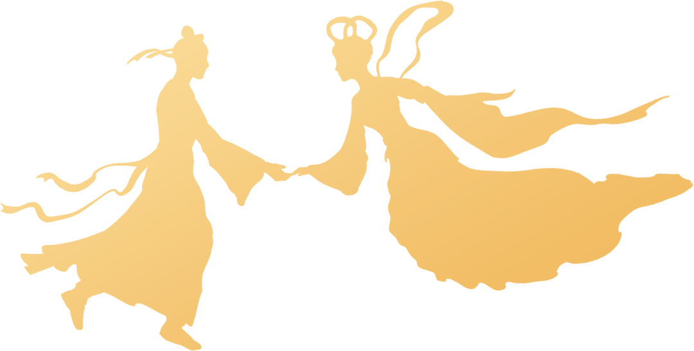

至此，苏杭

Investigate
行者无疆
流眄苏杭
为充分调研当代互联网文化，了解大数据技术的应用，增加公众对互联网文化的了解，向公众普及大数据技术，2022年暑假，大连理工大学“行者无疆·流沔苏杭”实践团历经六天五夜，走访杭州苏州，进行实地调查研究，探索当代年轻人的互联网文化及对大数据技术的了解情况。
实践通过线上线下结合的形式，参观互联网相关公司，聆听他们的企业故事，感受独特的企业文化；向当地年轻人发放问卷，面对面采访，了解年轻人的新思想；深入博物馆，名胜区，图书店，融入“江南佳丽地”的风土人情。
杭州
The first part
苏杭之旅首站，行者们来到浙江省杭州市。大家跟随线下行者的脚步，一同走进城云科技，在工作人员的带领下，了解大数据技术的应用，感受智慧城市的魅力，畅谈对当代互联网文化及大数据技术的见解；在西湖沿岸，采访青年市民游客，发放调查问卷，了解受访者对互联网的看法。
<<< 滑动查看更多图片 >>>
在走访调研之余，行者们来到京杭大运河旁，拱宸桥、登云桥头，乘坐画舫，游于河上，将古建筑与如画山水尽收眼底，浙江省博物馆藏品琳琅，还有那不与四时同的水墨西湖。
<<< 滑动查看更多图片 >>>
/////
苏州
The second part
苏杭之旅次站，行者们抵达江苏省苏州市。行者们来到中国在线旅游行业三大企业集团之一的同程旅行，线上线下相结合参观同程旅行大厦，了解大数据的应用分析，人工智能的应用，看到科技如何改变生活，对当代年轻人的互联网文化有了更为深入的了解。
<<< 滑动查看更多图片 >>>
行者们在此地也随寒山寺的古朴钟声、雕塑碑刻，穿梭千年时光；在布局风雅，水木清华的拙政园、留园里惬意悠然，信步闲庭；于古香古色的苏州博物馆中阅古赏珍，驻足沉思；在诚品书店处润泽心灵，体会书香致远，书韵宁静。

- 左右滑动
查看更多 -
/////
网媒
The last part
线下实践结束后，行者们的脚步并未停止。行者们通过网媒进行视频和新闻宣传，记录实践过程，也利用互联网发放问卷继续调研。
✦
网媒
宣传
✦
/////
打江南走过，于乌船雨巷里欣赏旖旎画卷，于摩天大厦中收获了解当代年轻人的互联网文化，体会大数据技术给生活带来的变化。流沔苏杭即将落幕，但行者们的脚步将继续前行，踏遍祖国的每一寸土地，孳孳不倦探寻一个又一个时代命题。

江南有期，行者无疆
来源 | 行者无疆实践团
图片 | 行者无疆实践团
文字 | 杨婧葳 崔雨琪
排版 | 崔雨琪
审核 | 朱华玮 崔雨琪